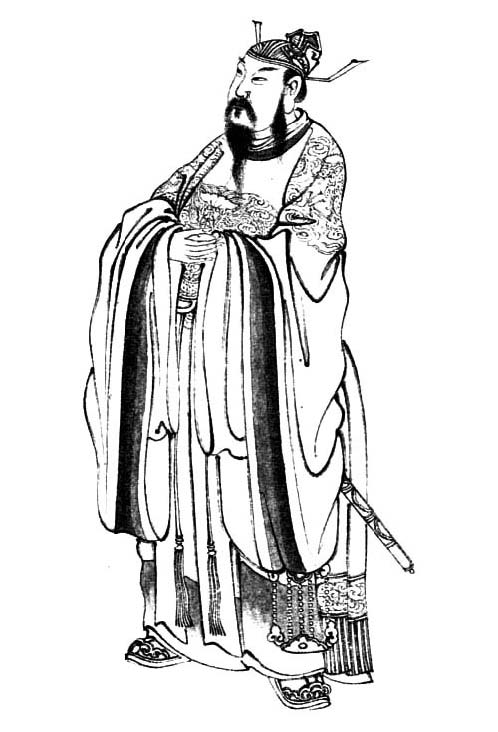
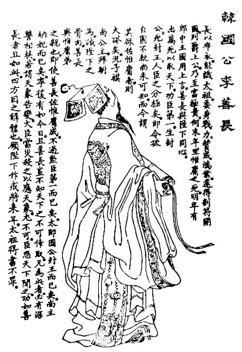

然而世间之事，有一利必有一弊。我们素日常见到看门人最珍视手中那点权力，也最善于把那点权力用到极致。我们也屡屡感到，权力越到底层，就看得越紧、用得越狠，绝不容人觊觎。这并不难解。对权力的过度珍惜，是与身处底层所得来和形成的更大的人身恐惧互为因果的。这种恐惧，令人一旦攫取了权力便会以近乎病态的方式捍卫之死守之。试想，当一个备受欺凌与屈辱的孤儿，一步登天成为皇帝的时候，能意味着什么？
有关中国古代帝权，之所以在明代——主要是通过朱元璋之手——达到登峰造极的地步，历史学家和历史哲学家自会有他们种种理论和逻辑上的条分缕析，拿出种种所谓“必然”的论述来。对此，我这里不置一词，只想说说个人因素起到的作用。
吴晗《朱元璋传》讲了朱元璋幼年和少年时的两个故事。
第一个故事发生在朱元璋很小的时候：“替田主看牛放羊，最会出主意闹着玩，别的同年纪甚至大几岁的孩子都听他使唤。最常玩的游戏是装皇帝，你看，虽然光着脚，一身蓝布短衣裤全是窟窿补丁，破烂不堪，他却会把棕梠叶子撕成丝丝，扎在嘴上作胡须，找一块破水车板顶在头上算是平天冠，土堆上一坐，让孩子们一行行，一排排，必恭必敬，整整齐齐三跪九叩头，同声喊万岁。”
第二个故事，讲的是成为孤儿后的他，在皇觉寺中的遭遇：“（寺里）个个都是长辈，是主人，就数他小、贱，他得低声下气，成天赔笑脸侍候。就连打水煮饭的长工，也还比小行童高一头，当他做二把手，支使着做这做那。这样一来，元璋不单是高彬长老一家子的小厮，还带着做全寺僧众的杂役，根本就是长工、打杂了。事情多，闲报也就多，日子长了，塞满一肚子冤枉气，时刻要发作，却使劲按住，为的是吃饭要紧……对活人发作不了，有气无处出，只好对泥菩萨发作了。有一天，扫佛殿扫累了，扫到伽蓝殿，已是满肚子的气，不留神绊着伽蓝神的石座，跌了一大跤，气忿之极，顺手就用笤帚使劲打了伽蓝神一顿。又一天，大殿上供的大红蜡烛给老鼠啃坏了，长老数说了元璋一顿。元璋想伽蓝神是管殿宇的，当看家菩萨的不管老鼠，却害行童挨骂，新仇旧恨，越想越气，向师兄讨了管笔，在伽蓝神背上写了‘发配三千里’，罚菩萨到三千里外充军。”
虽是两个小故事，还是见出了朱元璋的个性和内心。一是他很有暴力倾向。二是他如果有怨气，喜欢发泄也非发泄不可，对活人发作不了，就拿泥菩萨出气。三是他那小小脑袋所想出的报复手段，居然已是充军、流放这类方式。
看过朱元璋画像[19]的人，恐怕很难忘记那张脸。《明史•本纪第一》形容是“姿貌雄杰，奇骨贯顶”。文人虚浮，丑怪骇人到了他们嘴里竟能转变成这些词。实际上，这张脸长得崎岖不平，形状活似一只长歪的山芋；黑而粗糙的皮肤散着几粒麻子，额头和太阳穴高高隆起，颧骨突出，大鼻、大耳、粗眉毛，两睛鼓凸，发出冷酷的光；尤为奇崛的是他的下巴——从宽大有力的颌骨处开始向前突着，一再延伸，直到远远超出额头之外，从侧面看浑如一头狠霸的大猩猩。这只罕见的下巴，再度提示了人来于动物的遥远往事；它象征着健壮的咀嚼力和贪婪旺硕的食欲，令人联想起兽界一切善于撕咬吞噬的凶猛捕食者。
同时不可忽视的是，这张“卡西莫多式”丑脸跟一个身为皇帝的人相结合，在心理上所必然引起的冲突。这并非出于无稽的相面学。据说先后有两位替朱元璋造像的画师，因为只知摹形绘影不解粉饰遮掩而掉了脑袋，直到第三个画师，才仰体圣心，把他画得慈祥仁爱。这是人之常情。对朱元璋来说，那崎岖不平的相貌固然“雄杰”，但无疑也镌刻着他卑低坎坷的出身、遭际，尽管贵为人君，岁月的无情虽可从宫庭画师笔下抹去，却无法从自己脸上和内心世界抹去。
前文提到孟森先生关于朱元璋“峻法”的评论，说他“约束勋贵官吏极严，实未尝滥及平民”。这是孟先生的敏锐细腻之处。展开下文以前，我重申孟先生的这个观点，再次强调不宜以“暴君”视朱元璋。暴君根本标志是虐世害民，只有与人民为敌者，才配此称号。而朱元璋，不论在权力斗争中多么残忍，整体来说他不是祸害人民的皇帝，相反，历来新朝新君喜欢挂在嘴上、口惠而实不至的“与民休息”，在朱元璋那里却是其治政的切实出发点。洪武年间清丈土地，兴修水利，奖励农耕，减免赋税，杀减贪风，改良吏治，老百姓都得利受惠。我觉得他尤其应被称道的，是不好大喜功、不靡耗国力、不浪费民财，无意于什么雄才大略、丰功伟绩、万邦膜拜等虚荣。这些对中国那些所谓“有作为帝王”，从来是无法抵挡的诱惑，然而终洪武朝三十一年，在朱元璋的身上，我们丝毫未见这种自我膨胀，尽管作为“光复中华”的帝王，他似乎很有理由膨胀一番。他牢牢把握一点：不扰民、让百姓安稳地生活。所以，当我们回味洪武时代，会惊讶于它非常平淡——没有奇迹壮举，没有伟大工程，没有征伐，没有任何波澜壮阔的事情。与许多开国君主相比，他简直是过于安静的皇帝。
但对官吏而言，朱元璋搞的真是不折不扣的酷政、暴政。可能中国哪个朝代，做官皆不曾像在洪武朝那样提心吊胆。这位穷山恶水生养出来的贫民皇帝，把他那个阶层的野性、狠劲充分发挥在吏治上，惨无人道地对待贪官污吏，剥皮、断手、钩肠、阉割……全是最骇人听闻的酷刑，而且五花八门、种类繁多。另外我们还知道，几乎整个古代，中国普通百姓是无权告官的，或者，凡告官者先打一顿杀威棒；然而洪武年间居然宣布，凡是贪赃害民之官，百姓人人皆可将其直接扭送京师。有时候我不禁怀疑，朱元璋如此严厉打压官吏，多大程度上是出于肃清吏治目的，又多大程度上是一种“疯狂的阶级报复”？因他的做法里头，许多地方令人感到是非理性的、宣泄的，夹杂着强烈个人情绪，是恨，以及伴着毒意的快感。他不是心宽易忘的人，洪武十一年，当忆及父母双亡、无地可葬的凄惨时刻时，他亲笔描画了使他深受伤害的一幕：“田主德不我顾，呼叱昂昂，既不与地，邻里惆怅……”这记忆，暗中怎样左右着朱皇帝的心神，如何影响了他为政？
当然，还有比记忆和心理更重要的因素。

中山王徐达。
徐达，明开国武臣第一，有古大将之风。他的死也很蹊跷，据说死于朱元璋赐膳之后。此当然不载于正史。

韩国公李善长。
明建国功臣第一，明代制度制订者，朱元璋曾将他比为汉之萧何。七十七岁牵胡惟庸案，处死。